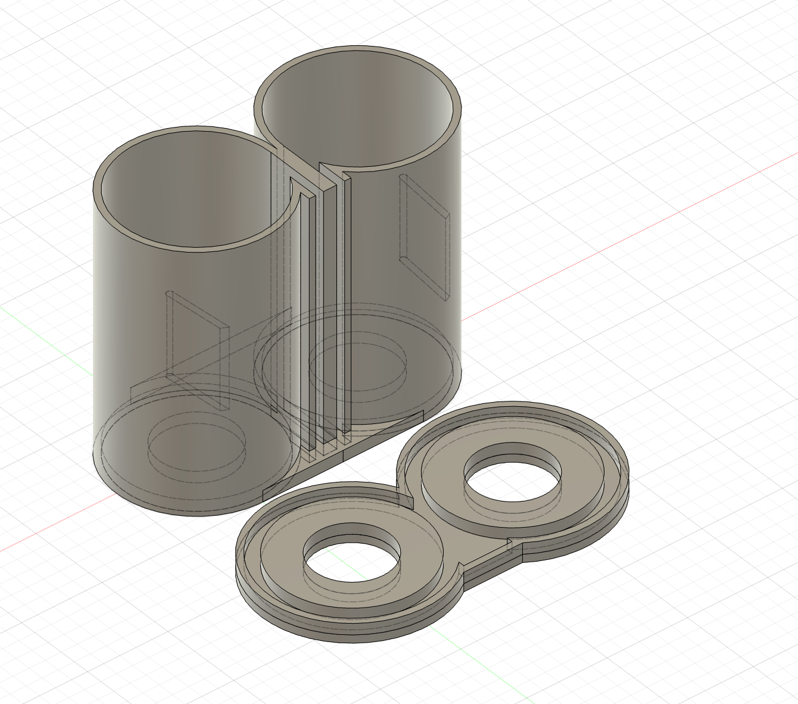
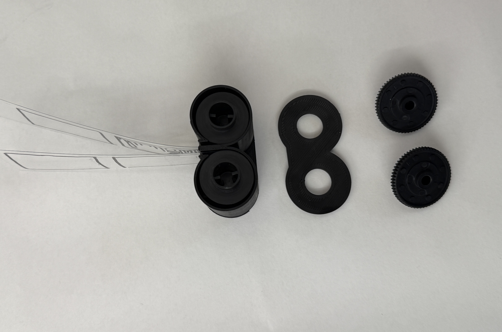
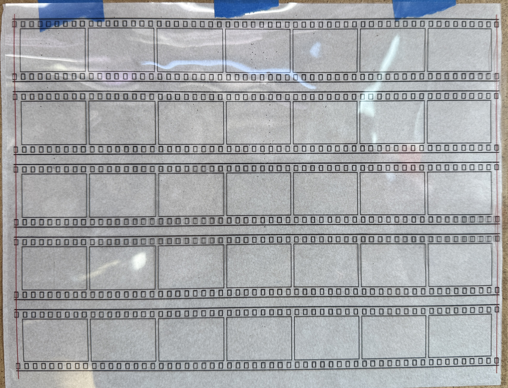
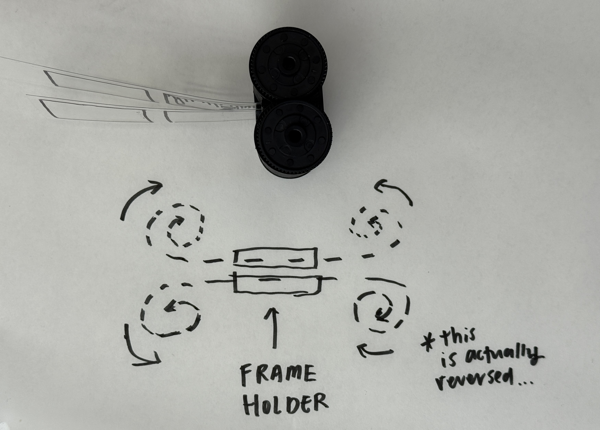
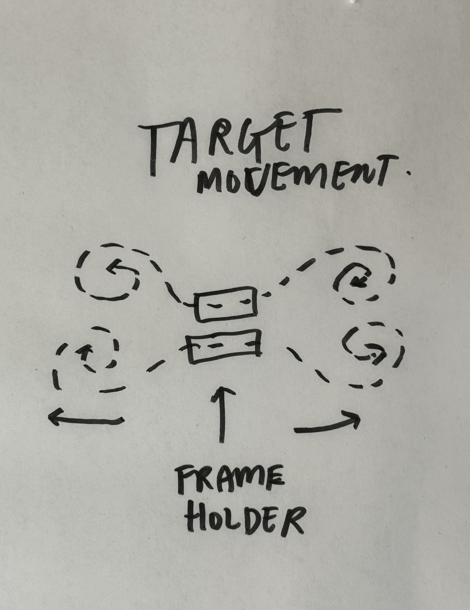
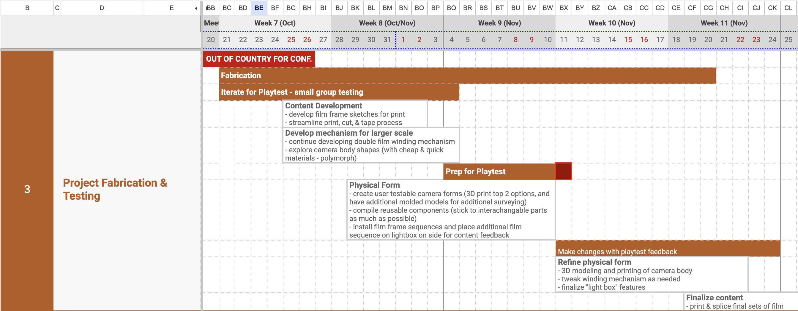

Goals for next three weeks
this week's priority (10/26-10/27):
- build out dual film winding canisters
- start developing 1:1 frame change mechanism so there is at least something to work with at playtest
- test print frame and film outlines on transperancies
- Q: what does it mean for the film to have a definitive start and end? why and how can I create an endless loop visual experience?



Some lessons learned:
the dual canister that I built and printed this week functions. But as I was winding the film into the
canisters, I realized the film winding direction is opposite of my intended interaction. so I will need
to redesign the canisters. Additionally, the tension holder that I printed is a bit too rigid and is
pushig the film too hard against the barrel, causing the winding experience to have too much tension, so
that design detail needs to be adjusted.


next week's priority (10/28-11/3):
- finish 1:1 frame change mechanism, so there is a working object for playtest
- design physical form of camera to house 1:1 frame change mechanism
- resolve the winding mechanism troubles - winding tension & Geneva mechanism rotation for target experience
- test color and print on transperancies
- develop "film" visuals
playtest prep (11/4-11/10):
- if Geneva mechanism works, design physical form of camera to house new mechanism
- print a couple sets of "film" visuals for in & out of camera viewing
Updated Timeline
Click here for up-to-date timeline
Phase 3 (project fabrication & testing): The month of November will focus on
developing
fabricating techniques while incorporating user testing. Towards the end of the month, there should
be
minimal notes on revisions and the final version can be printed and assembled.
Update 2025-10-06: rearranged tasks to better align with my travel schedule.
Update 2025-10-28: shifted some tasks to align with my absence last week

Phase 4 (project presentation): The last two weeks are reserved for final tweaks and finishes, documention, and presentation prep

Bill of Materials
Below is a tentative list of materials needed for this project (no updates have been made, yet):